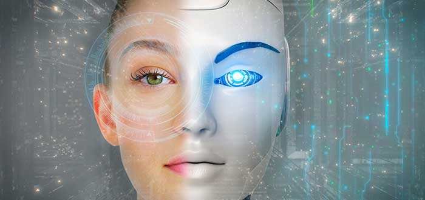
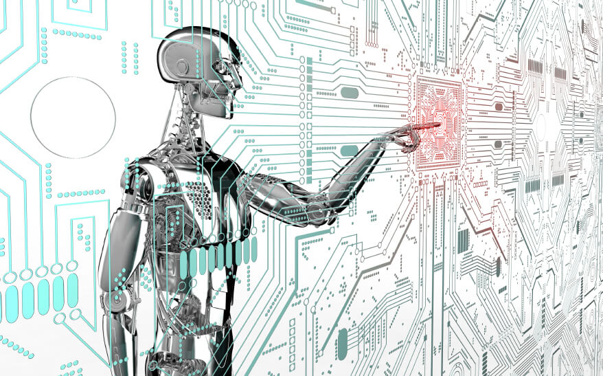

"LOS CYBORGS"
Introducción
 Los cyborgs son organismos tecnológicos que se implementan a una ciertos individuos para mejor sus condición de vida, a lo largo de los años el científico “Kevin Warwick” conocido como primer hombre máquina que se puso a prueba para ser protagonista de varios experimentos, algunas empresas han dado a conocer el desarrollo de máquinas para mejorar los hospitales o el ámbito de la salud, con ello darle la oportunidad de conocer habilidades físicas y mentales con altos niveles de conocimiento y evadir los posibles enfermedades.
Pero también se presentan discusiones a cerca de estas tecnologías o transhumanista es considerado como ilimitaciones de la mente de un cuerpo humano, donde las personas entienden que por ser robots debe que darle su ubicación a un tercero, que no se puedan despegar de la tecnología y puedan producir ciertas alergias en el material suministrado, haciendo llagar a una desigualdad del pensamiento acerca de los cyborgs donde no son lo mejor para esta humidad ya que cambiaría al mundo y la humanidad
En el 2010 un grupo de científicos E.U. descubrieron un sistema para implementar simuladamente, para que se generan nuevas células a lo largo del tiempo fue dado a reconocer por el hospital de Londres donde puso aprueba a pacientes con problemas cardiovasculares realizaron una arteria artificial para su funcionamiento de la nanotecnología, además implementaron sensores en algunas extremidades del paciente para que al mover el musculo puede llevar cabo en funcionamiento. (2010, biotecnología). Nos damos de cuenta que al paso del tiempo hallaron razones para seguir con la ayuda tecnológica
Debemos tener en cuenta que gracias a todos los científicos que dieron su vida por renovar grandes ideas y darle un cambio nuevo, personas que por accidentes perdieron alguna parte de su cuerpo o nacieron con deficiencia para movilizarse llevan los cyborgs para generar una ayuda más eficiente y superación. Con ellos nos encontramos con:
Neil Harbisson británico de 38 años de edad fue la primera persona con un implante tipo ante en la parte inferior de la cabeza, por medio de vibraciones interpreta los sonidos y así hacer reconocimiento de los colores infrarrojos y ultravioletas, también esta Rob Spence de pequeño perdió su ojo y tubo la habilidad de crear implantar una microcámara en la prótesis del ojo y para ver el reflejo de la imagen por medio inalámbricamente. Unos de los científicos que no se dieron por vencido a pesar de sus condiciones (surgimiento de los cyborgs) No obstante, existieron personas que dieron su vida por los demás o simple hecho de ser una persona diferente como el Dr. Kevin Warwick se implanto un microchip en el brazo que hacía que prendiera la luz y pc de forma remota, fundador de un proyecto y convertirse en el primer cyborg por completo. Incluido Moon Ribas conocida por el desarrollo de implantarse sensores sísmicos en los pies que percibe los terremotos por medio de vibraciones (1998, comienzo de los cyborgs)
Existen dos principales riesgos
 El riesgo físico que cuando el cuerpo rechaza el material implantado se buscan materiales biocompatibles, adicionalmente el riesgo es cuando el celebro no tiene la idea de estar cooperando un sistema nuevo lo mejor es hacer un software especializado para darle a entender los beneficias de cada investigador. En este universo renovado es complicado dale a entender a miles de ciudadanos que, al modificar una parte de su cuerpo por medios tecnológicos, no son malos para el mundo es mejor convivir y relacionarnos ante ellos porque todos aprendemos por medio de la experiencia. Por partes legales no hay ninguna ley ni derecho para las personas con uso de tecnologías, por qué no se han interesado sobre este tema.
la mentalidad de algunas personas sobre el hecho de manipulación genética al producir un elemento tecnológico para el ser humano en este caso tenemos a él filosofo de Stanford que juzga la existencia posthumana donde dice “que formaría nuevas ingenieras sociales, abusos, discriminaciones, esclavitud e el totalitarismo” que a pesar de que ocasiones grandes cambios también será algo bueno e innovador para el mundo. Fukuyama dice que el transhumanismo es “la idea más peligrosa del mundo” (Fukuyama, 2004, transhumanismo) ya que hace un remplazo superficial sobre el ser humano pues pueden ocasionar fallos en sus algoritmos produzca daños a los demás y para solucionar tiene de un alto costos, es por ello hoy en día los jóvenes con una mentalidad y un mejor manejo sobre la tecnología ya que en un futuro será fundamental.
Conclusión
La palabra cyborgs se da a entender como un robot y más allá del desarrollo de la inteligencia artificial y ensamblarla con la sociedad, pero no están así son ciertas partes ajustables para la humidad para tengan una mejor civilización y puedan llegar producir los Android. Hoy en día se necesita de personas capaces de ejercer su fuerza y tiempo que puedan ayudan al cuidado de pacientes Alzheimer, enfermedad de la neurona motora (ENM), y tener al alcance servicios de asistencia personal, ser eficaz en los pagos de servicios bancarios, y las comunicaciones al exterior, Con muchas más capacidades. Al principio de todo el crecimiento de la tecnología tenían como prioridad dar y apoyar a las personas que, por accidentes trágicos, perdieron una extremidad de su cuerpo y esto lo deprimía tanto lo emocional y fisca y decidieron darle una vuelta al mundo poco a poco; en la medicina, el arte y lo militar, el científico Dr. Kevin Warwick se utilizo así mismo para emprender grandes ideas de la implementación de chips.
Pero también esta lo malo de las tecnologías poque no siempre está la perfección al principio debemos introducirnos en el mundo de los investigadores para saber el intención que nos brinda las tecnologías en la prueba de experimento y error para nuestro futuro que además de ser algo diferente es una ayuda mutua hacer valorar nuestros conocimientos y capacidades superarnos así mismo y llegar a un punto donde los productos tengan una alto reconociendo a la venta y lo implemente en los hospitales, para llevarse a cabo su utilidad, se generan pequeños problemas ya sea que el cuerpo no resista los prototipos y tengan que para su solución busquen el material adaptable para cada ser vivo ya sea persona o animal, no debemos dejar a un lado a las mascotas ya aquellos nos aportan felicidad a nuestros hogares y si se produce circunstancias peligrosas tengan la mismas oportunidades que los humanos. También pueda ser que el celebró no tenga ejercido la habilidad de hacer el movimiento y con lleve a terapias. Ciertas personas dicen que las tecnologías son como un problema o peligro pues estos están programados para hacer algo en especifico y q no pueden medir sus pensamientos o actitudes y dañen a una sociedad